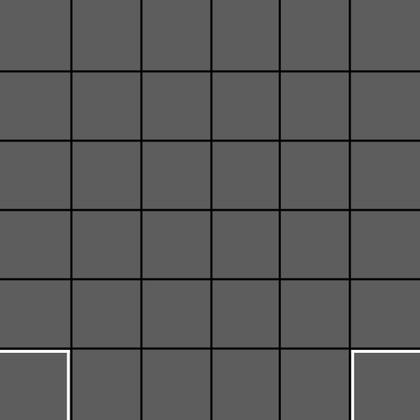
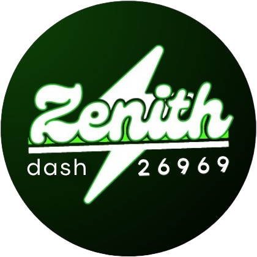

Arena BioBuzz

Ativações e informações:
Motor do elevador:
Motor do intake:
Localização atual eixo X: 0.0
Localização atual eixo Y: 0.0
Histórico de Treinos
| Data/Hora | Autônomo | TeleOp | Total |
|---|


| Data/Hora | Autônomo | TeleOp | Total |
|---|